Every number below comes from the thesis reports, and the instrument that produced it is named. Laser Powder Bed Fusion of Metals (PBF-LB/M), also called L-PBF or SLM, builds a part by melting fine metal powder layer by layer with a laser.
Project 01
In-Process Laser Remelting for Precise Layer Topography in FeSi6.5 Soft Magnetic Components
Master's Thesis · PBF-LB/M process development
Master’s thesis · sole investigator · Hochschule Aalen, LaserApplication Center · submitted 09/2025
A heat-conduction laser remelting strategy that smooths the FeSi6.5 layer surface for thin insulating layers, in an alloy too brittle to roll or stamp.
38.3%smoother top layer, one pass Sa 4.55 → 2.81 µm
1.77 µmSa with every-layer cyclic remelting
2024peer-reviewed, Procedia CIRP
Institution: Hochschule Aalen (Aalen University of Applied Sciences), LaserApplication Center (LAZ) · Research programme SmartPro – Smart-ADD Machine: ALC2 × ICM universal laser research system Supervisors: Prof. Dr. Harald Riegel (first) · Prof. Dr. Dagmar Goll (second) Submitted September 2025 · Defended October 2025 · Published in Procedia CIRP 124 (2024)
Problem statement
Over 40% of the energy lost in an electrical machine goes to eddy currents. The fix is lamination: thin, individually insulated steel sheets stacked so the current has no continuous path. FeSi6.5 is the ideal material for it, with up to 30% lower core losses than conventional silicon steel. It is also too brittle to roll, stamp or cast without cracking, so the industry designs motors around what the rolling mill can produce instead of what the magnetic circuit wants.
Printing removes that constraint and introduces a new one. As-built surfaces are rough (Sa ≈ 4.55 µm), and a rough layer needs a thicker insulating recoat. Thicker insulation means thicker laminations, which brings the eddy-current losses straight back.
The task: establish a PBF-LB/M route for FeSi6.5 that produces deliberately smooth, controlled layer topography, flat enough to carry an ultra-thin insulating layer, while holding full density, without cracking, and without losing dimensional accuracy in an alloy that punishes every one of those mistakes.
Etched cross-sections: every-layer cyclic remelting (left) against normal build-up (right). Remelting every layer slightly modifies the grain structure, with sporadic epitaxial grain growth across several tracks and layers.The remelting principle, start to finish. Red is the laser: the beam leaving the scanner head, and the second-exposure tracks it leaves behind. Blue is the first-exposure filling pass that builds the layer. The hatch turns 90° clockwise on every new layer, and the remelting pass turns again over the top one. Defocusing from 80 to 300 µm drops the beam intensity thirteenfold and moves the melt from deep penetration to heat conduction, which is what closes the surface: Sa 4.55 to 2.81 µm.
How it was done: three experimental phases and in-house verification
Phase 1: Establish the baseline build window
A 4 × 4 matrix over laser power 200–350 W and scan speed 600–900 mm/s, at constant 80 µm hatch, 80 µm focus, 40 µm layers and 90° scan rotation. Sixteen 10 × 10 mm samples, argon at 4 m/s, < 200 ppm residual oxygen. 150 W failed to melt, 400 W over-melted. Working point fixed at 300 W / 800 mm/s ≈ 117 J/mm³, giving Sa 7.25 µm at 0.152% porosity.
Phase 2: Final-layer remelting
One re-exposure of the top layer, sweeping 300–400 W against spot diameter 80–200 µm. Two failure modes emerged, and separating them is what made the window achievable:
Molten-metal deposition at the part edges scales with power intensity. At 400 W / 160 µm the deposition reached 898 µm at 20.9 kW/mm²; at 300 W it fell to 545 µm at 15.7 kW/mm².
Remelting depth scales with areal energy intensity.
Lowering power intensity suppressed the edge deposition; trimming areal energy density controlled the depth. A single volumetric energy density figure conflates the two and cannot resolve the trade-off.
Phase 3: Cyclic remelting
Remelting extended to the whole build at intervals of every 1st, 2nd, 3rd and 5th layer, at 325 W / 300 µm spot / 60 µm hatch / 600 and 800 mm/s, against a non-remelted reference.
The four cyclic strategies tested: remelting every 1st, 2nd, 3rd and 5th layer, against a non-remelted reference.
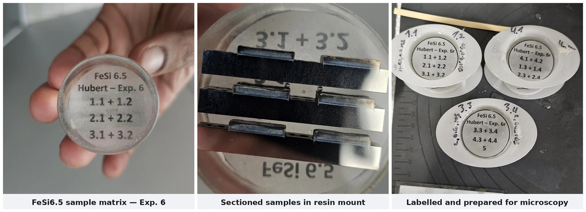
The specimens behind every number on this page. Each build was sectioned parallel to the build direction, mounted in resin, ground and polished, then labelled by sample pair before microscopy.
Verification: performed in-house, end to end
Areal topography: KEYENCE VR-3100 one-shot 3D optical profilometer (Sa, elevation maps, line scans).
Tactile roughness: MarSurf M400 (Ra, Rq, Rz, Rt), measured both parallel and perpendicular to the scan vector. A directional process produces directional roughness, and a single-direction measurement would have flattered the result.
Cross-sections: Struers Secotom 10 sectioning and Tegramin 30 polishing parallel to the build direction, SiC 50–2000 grit, 3 µm and 1 µm diamond suspension, Co-m3 etch (20–30 s) for Fe-Si; imaged on the Zeiss Axio Imager.Z2 Vario to 500× with ZEN Core quantifying pore size, pore count/mm² and area-fraction porosity by adaptive thresholding.
Process hardware: TRUMPF TruFiber 400 single-mode fibre laser (1075 nm, 400 W) · SCANLAB intelliSCANse 30 scanner · varioSCANde II 40i PR z-shifter with negative defocusing · Autodesk AMCF control · Netfabb 2024 build preparation · hema ICAM weld camera, mounted at an angle outside the process chamber.
Edge rounding and material build-up at the contour
Less loss of accuracy
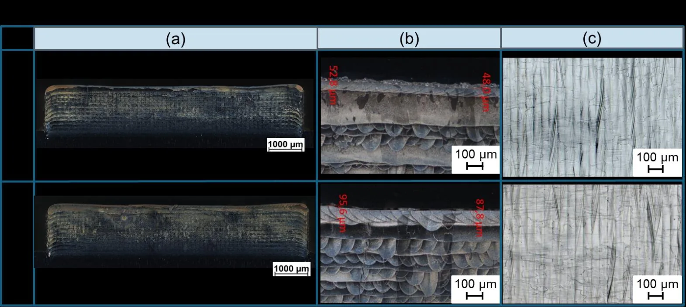
Dark-field cross-sections at 800 and 600 mm/s, with measured remelting depths (48-96 µm here) and the resulting top layer. In the stable heat-conduction regime the published remelting depth is 52-82 µm, about one to two layer heights.
Additional quantified outcomes
Porosity at the optimised build point (300 W, 800 mm/s, before remelting)
0.152%
Onset of instability
From 375 W the remelt switches back to deep penetration and reaches the build-up melt depth
Cracking
Sporadic cracks in the FeSi6.5 layer surface; remelting neither adds to them nor prevents them
Practical setting
Remelting every 5th layer: almost the same surface as every layer, with less loss of part accuracy
Parameter combinations characterised
30+, across three experimental phases
The finding that matters
The lever is the beam, not the power. Defocusing from an 80 µm to a 300 µm beam cut the average intensity from 59 to 4.5 kW/mm² and moved remelting from deep-penetration to heat-conduction melting. In that regime the scan tracks flow together into a closed surface while the remelt reaches only one to two layers deep. Remelting every fifth layer keeps almost all of the gain and limits the edge rounding that every-layer remelting causes.
Publication
Hofele M., Antony H., Kolb D., Riegel H. (2024). Production of soft magnetic FeSi6.5 parts with precise layer topography using integrated laser remelting at PBF-LB/M to induce multi-material lamination.Procedia CIRP 124, pp. 6–11.
DOI: 10.1016/j.procir.2024.08.060
A metal, additively manufactured inlet nozzle system that sweeps spatter clear of the build plate, designed to sit alongside a heated platform that was to be fitted later. Designed, simulated, built and commissioned on the ALC2.
4 m/sargon flow sustained across full builds
<200 ppmresidual oxygen held in the chamber
CAD → builtdesigned, simulated, made and commissioned
Institution: Hochschule Aalen (Aalen University of Applied Sciences), LaserApplication Center (LAZ) · Machine: ALC2 Begun as a working student, completed as a research assistant
Problem statement
In PBF-LB/M the laser vaporises metal, ejecting spatter and condensate into the build chamber. Whatever is not swept away lands back on the powder bed and is fused into the next layer as a defect, while airborne particulate attenuates and scatters the incoming beam.
On the ALC2, the self-built machine carrying the FeSi6.5 work, inconsistent inlet flow meant part quality depended partly on where on the plate the sample sat. That is fatal to a study which has to attribute every difference to the parameter under test.
There was a second condition on the design. The laboratory intended to add build platform heating to the ALC2 for later experiments, to reduce the thermal gradients that make a crack-sensitive alloy like FeSi6.5 difficult. Whatever I put into that chamber had to survive sitting next to it.
The task: design a gas system that sweeps molten spatter clear of the plate instead of letting it settle back, and build it so that a heated platform fitted afterwards would not force a redesign.
Live smoke-flow validation of the 3D-printed inlet nozzles on the test rig, confirming the directed gas curtain predicted in CFD.
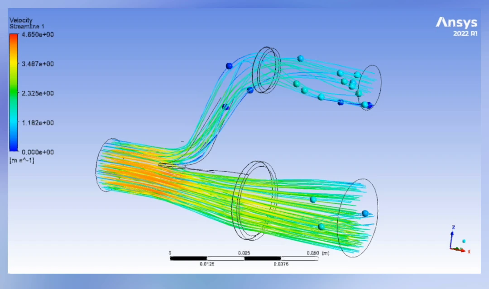
Velocity streamlines through the inlet nozzle and diffuser assembly (ANSYS Fluent, 0–4.65 m/s). Design variants were selected on simulation evidence before fabrication.
How it was done: CFD, design iterations and commissioning
Requirements. Target velocity over the process zone, a flow direction that carries spatter clear of the plate rather than across it, and a geometry that fits a machine which already exists.
Design. Developed inlet nozzle and diffuser geometry in CATIA V5, iterating nozzle arrangement, outlet cross-section and flow-straightening features to convert a concentrated inlet stream into an even, directed curtain across the full build area.
CFD analysis. Modelled the chamber flow in ANSYS Fluent, then read velocity contours and streamlines at the powder-bed plane to find and remove the recirculation zones and stagnation points where spatter settles instead of being carried out.
Iteration against simulation. Successive geometry variants through CFD, selected on evidence. That loop is what separates a designed component from a fabricated guess.
Physical validation. Built printed prototypes of the selected geometry and ran smoke-flow tests on a rig before committing to the machine.
Material choice driven by the thermal case. Because platform heating was coming, I took the nozzles in metal rather than polymer and made them additively, so the geometry CFD had selected could be built as drawn and still tolerate a hot chamber. The constraint set the process, not the other way round.
Manufacture. Produced the component on a TRUMPF TruPrint 1000, monitoring the build live (recoater pass, laser exposure and melt-pool behaviour) against the parameter set on the machine control screen.
Integration and commissioning. Post-processed and integrated the assembly into the ALC2, and verified operation on live builds. The system subsequently carried the full thesis campaign at argon 4 m/s and < 200 ppm residual oxygen.
The component being built on a TRUMPF TruPrint 1000. Recoater pass, laser exposure and melt pool through the laser-safety window, with the live build parameters on the control screen.
As-built with supports, finished component, and the assembly integrated on the machine.
Key contribution & results
Spatter management
Active evacuation of molten spatter away from the build platform, instead of redeposition onto the powder bed
Flow field
Recirculation and stagnation zones at the powder-bed plane identified in CFD and designed out
Process atmosphere
Stable argon flow at 4 m/s with < 200 ppm residual oxygen sustained across full builds
Design for a later upgrade
Metal, additively manufactured nozzles specified so the assembly would tolerate the build platform heating the laboratory planned to fit afterwards
Manufacture
Component produced by PBF-LB/M and post-processed in-house, with the build monitored live against its parameter set
Delivery
Designed, simulated, manufactured and integrated: complete component lifecycle on operating research hardware
Downstream validation
The system carried the entire FeSi6.5 thesis campaign and the resulting peer-reviewed publication
Why this project is the differentiator
Most AM engineers optimise parameters on a machine. This improved the machine itself, from requirement through CAD, CFD, prototype, validation and commissioning. The proof it worked is that the research it enabled was published.
Project 03
Porosity Minimisation in DMLS Cobalt-Chromium for Medical Implants
B.E. Thesis · Direct Metal Laser Sintering (DMLS) · Taguchi Design of Experiments
B.E. thesis · lead author, four-person team · Jeppiaar Institute of Technology, Chennai · 02–05/2021
Nine runs instead of twenty-seven. Mapped a tenfold porosity spread across the DMLS parameter space and identified which factor actually governs it.
2.8%porosity at the best parameter set
10×spread across the array 2.8% to 27.06%
9 of 27runs needed Taguchi L9 design
Problem statement
Co-Cr is a standard alloy for load-bearing implants (hip and knee joints, dental bridgework, stents) because it is biocompatible, corrosion-resistant and hard. Producing it by DMLS unlocks patient-specific geometry.
But porosity in an implant is not cosmetic: pores are fatigue crack initiation sites in a component required to survive millions of load cycles inside a human body, and Co-Cr already has low ductility.
The task: determine which DMLS parameters actually govern porosity in Co-Cr, rank them by influence, and identify the low-porosity operating region, using a statistically structured method rather than an unaffordable full-factorial campaign.
Co-Cr pore distribution at the best and worst parameter sets of the L9 array: a ~10× spread from parameter choice alone. Scan areas differ (5 × 5 µm and 10 × 10 µm) and are labelled on each panel.
How it was done: the Taguchi L9 design and measurement chain
Taguchi L9 orthogonal array. Three parameters at three levels: laser power (170 / 270 / 370 W), scan speed (250 / 350 / 450 mm/s), hatch spacing (0.15 / 0.25 / 0.35 mm). Nine runs instead of the 27 a full factorial needs, because machine time and powder were the binding constraints.
Sample manufacture. Built the full Co-Cr specimen set by DMLS across all nine parameter sets, executed in randomised order to avoid confounding by build drift.
Multi-method porosity quantification. Had porosity measured by micro-CT scanning and localised mass measurement at an external facility, cross-checking the two rather than relying on a single technique.
Nanoscale characterisation.Atomic Force Microscopy (AFM) scans, also run externally, mapped pore distribution, area, volume and perimeter per sample. I analysed the resulting data using threshold and watershed grain-detection for automated pore identification.
Defect-mechanism reasoning. Separated keyhole porosity (spherical, excessive energy density collapsing the vapour depression) from lack-of-fusion porosity (irregular, insufficient melt-pool overlap). These sit at opposite ends of the energy-density scale and need opposite corrections.
Statistical analysis. Signal-to-noise ratio analysis (smaller-the-better), ANOVA and contour-plot response surfaces.
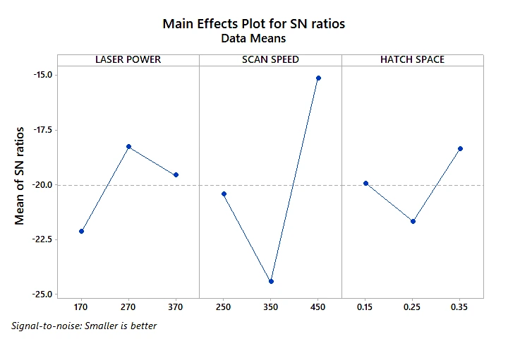
S/N response: scan speed dominates porosity (Δ 9.31) over laser power (3.87) and hatch spacing (3.31).
Key contribution & results
Experimental efficiency
9 runs instead of 27, 67% less machine time and powder
Porosity range across the array
2.8% to 27.06%, nearly a 10× spread from parameter choice alone
Best measured result
2.8% porosity at 270 W / 450 mm/s / 0.15 mm hatch
Dominant factor
Scan speed, S/N delta 9.31 against 3.87 for laser power and 3.31 for hatch spacing
Micro-CT, localised mass measurement and AFM pore mapping, measured externally and cross-validated
The engineering conclusion
Scan speed dominates porosity by roughly 2.5× over the next factor. That is not the intuitive answer: laser power is what most operators reach for first. Knowing the ranking is what makes the process controllable.
Why it still matters. This is where the method was set: orthogonal design, cross-validated measurement, and reasoning about defect mechanisms rather than guessing at parameters. The same discipline produced the FeSi6.5 result four years later, on a harder alloy.
Project 04
Purpose-Built Camera Mount for a Laser Processing Head
Free-time project · self-initiated design and build
Where: LaserApplication Center, Hochschule Aalen · When: March 2023, as a student
Watching the melt pool during laser processing on a TRUMPF TruLaser Cell 3000 needs the camera held in one fixed, repeatable position. The lab was using a general-purpose articulated arm: it drifted, it fouled the optics, and it had to be re-aimed at the start of every session.
So I made a dedicated one: sketched it, modelled it, printed it in-house and fitted and aligned it myself, about a week from first sketch to working mount. The slotted arms let you set the angle once; after that it locks and stays where you put it.
Free-time work, start to finish: sketch, CAD, print, fit, align. A small project, and the shortest example of how I work: notice the thing everyone has stopped noticing, then fix it properly.
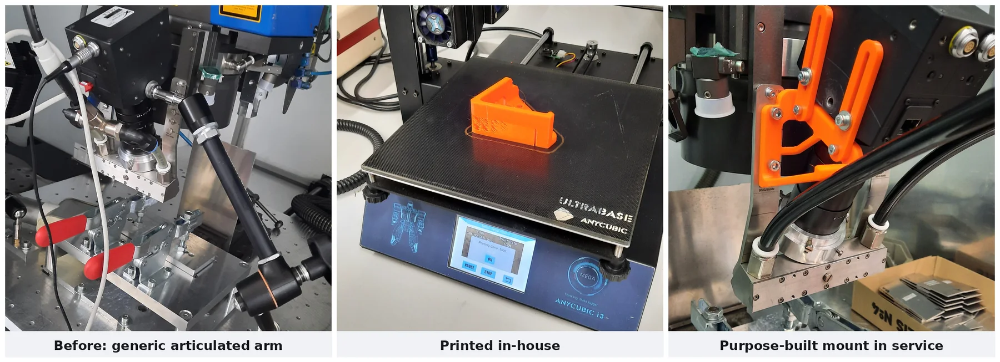
From a borrowed articulated arm to a printed bracket made for the job.
Project 05
Thermal Expansion of 3D-Printed AlSi10Mg, With and Without Heat Treatment
Project work during the Master's · Thermal characterisation
Project work during the Master’s · two-person team, I led specimen design, heat treatment and dilatometry · winter semester 2023/24
How heat treatment changes the thermal expansion of printed AlSi10Mg: the number an aerospace mechanism needs before its clearances can be set.
30specimen geometry matrix 5 to 50 mm, three diameters
300 °Cheat treatment, four hours
400 °Cexpansion measured to, dilatometry and TMA
Where: Hochschule Aalen (Aalen University) · Supervisor: Prof. Dr. Markus Merkel Presented January 2024 · two-person project with Anusha Arulalan
Problem statement
Think about a hinge on a satellite's solar array. It unfolds once, in orbit, and it has to work first time. On the way round it swings between roughly −150 °C and +150 °C, so every part of it grows and shrinks on every orbit. If you do not know precisely how much the material moves, you cannot set the clearances, and the mechanism either jams or rattles.
AlSi10Mg is the aluminium alloy most 3D-printed aerospace parts are made from: light, strong, good thermal conductivity. But printing leaves it in a stressed, fine-grained state quite unlike cast aluminium, and heat treatment changes that structure again.
The question: how does heat treatment change the way printed AlSi10Mg expands when it gets hot?
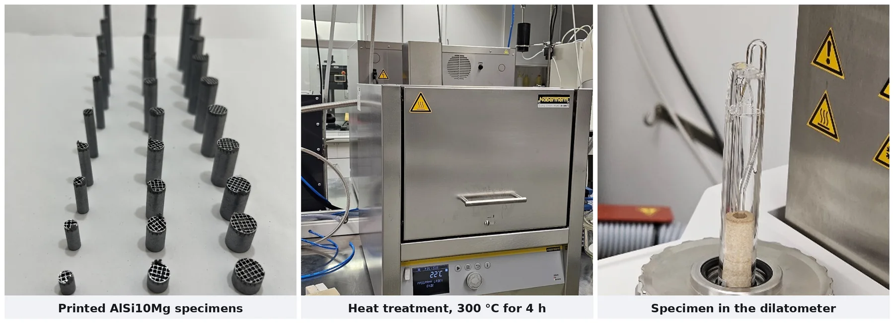
Specimens printed, heat treated, then measured. All three steps carried out in-house.
How it was done: specimen matrix, heat treatment and dilatometry
Specimen matrix. Cylinders spanning lengths of 5 to 50 mm at diameters of 5, 7.5 and 10 mm, so that any geometry dependence in the result would show up rather than hide.
Printing. Built on an SLM Solutions SLM 280HL (280 × 280 × 350 mm³, twin laser) using the qualified AlSi10Mg parameter set at 60 µm layers, rated to 99.4% minimum relative density. CAD in CATIA V5, build preparation in Materialise Magics.
Heat treatment. Half the set held at 300 °C for four hours in a Nabertherm muffle furnace, then cooled gradually. The other half kept as-built as the control.
Measurement. Thermal expansion measured to 400 °C at 5 K/min on a NETZSCH DIL 402 Supreme dilatometer, resolving length change to 0.1 nm, and cross-checked on a METTLER TOLEDO TMA/SDTA 2+.
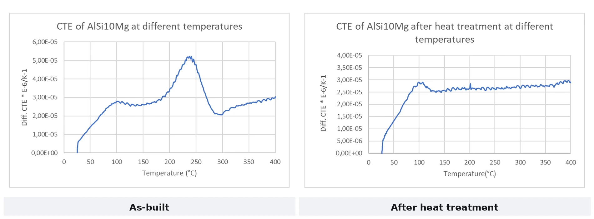
Coefficient of thermal expansion against temperature. As-built material shows a pronounced peak near 235 °C, reaching about 5.2 × 10⁻⁵ K⁻¹; after heat treatment the curve settles to a steady 2.5 to 3.0. Note the two charts use different y-axis scales.
What it showed
As-built AlSi10Mg does not expand steadily. Its expansion coefficient climbs to a marked peak around 230 °C, which is the printed microstructure relieving itself as it warms. After four hours at 300 °C that peak largely flattens and the material behaves predictably across the whole range.
For a designer this is the practical point: an as-built printed part and a heat-treated one are not the same material thermally, and clearances calculated from handbook aluminium data will be wrong for both. Measure the condition you intend to fly.
Why this project earns its place
It is the only work here on a second alloy family, a second industrial machine and a completely different measurement discipline. Same habit throughout: design the specimen set so the answer cannot hide, then measure it properly.
Earlier design and build work
Three projects from 2019 and 2020 in India, before the move to Germany and to metal additive manufacturing. Each is set out as situation, task, action and result, with scope and deliverables stated up front.
Project 06
Delta-Type 3D Printer for a Biodegradable Bagasse Composite
Sustainable product development using additive manufacturing · design, build and commissioning
Machine design and build · Jeppiaar Institute of Technology, Chennai · 2019 to 2020
A 3D printer built from a blank sheet of paper to extrude fine sugarcane bagasse powder bound with an adhesive. The output is biodegradable, the feedstock is agricultural waste, and the machine to do it did not exist to be bought.
9part types, 25 pieces in the bill of materials
1:1every part drawn full size, all sizes in mm
2020built, commissioned and printing bagasse
Scope: concept, kinematics selection, complete drawing set, part fabrication, assembly, commissioning Delivered: a working printer, a nine-part drawing set at 1:1, and a commissioned process for a feedstock with no published parameters Feedstock: fine bagasse powder with an adhesive binder ·Drawing set dated 27 February 2020 ·Site: Jeppiaar Institute of Technology, Chennai
Situation
Additive manufacturing is sold as the sustainable way to make things, and nearly all of that argument is about the shape of the part. Less swarf, lighter structures, no tooling. It says far less about what the part is made of.
Bagasse is the fibre left over once sugarcane has been crushed for its juice, and a mill produces it by the tonne as a by-product. It is already pressed into moulded tableware, so the material is known to behave. Printing with it is a different question, and there is no printer on a shelf that will do it.
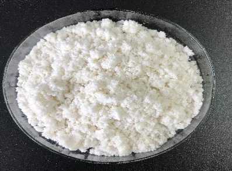
The material: treated sugarcane bagasse as a fine powder. Bound with an adhesive, it is what the printer extrudes.
Task
Build a working 3D printer that lays down a biodegradable material made from agricultural waste. Build it from first principles rather than modifying a kit, so that every constraint in the machine is one I chose and can account for.
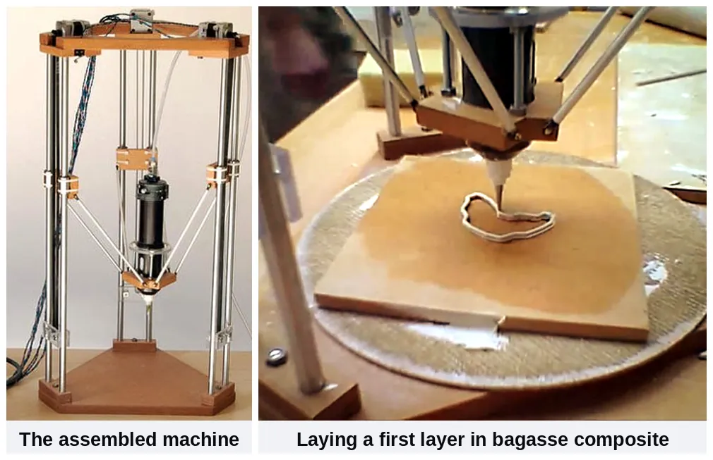
The machine as built, and the same machine printing. Six vertical rods, three sliders and three pairs of arms converge on one small effector, which carries the extruder. The right-hand frame is that effector laying a first layer in bagasse composite.
Action
Material first, machine second. Bagasse powder bound with an adhesive is a paste, not a filament. That single fact ruled out every standard hot end and fixed the extruder requirement before a line was drawn.
Delta kinematics, chosen for what it carries. Three vertical towers, six light arms, one small effector holding the extruder. The bed does not move, so the printed part is never shaken. A cartesian machine of the same build volume shuttles the bed and the growing part back and forth on every layer, which a wet composite bead will not survive.
The whole drawing set by hand. An exploded assembly with a nine-part bill of materials, then dimensioned part drawings at 1:1 with every size in millimetres. Nothing was cut or ordered before it was drawn.
Repetition designed in on purpose. Of the nine part types, five repeat: three base rectangles, three slider supports, three rod sliders, six extruder bars and six rods. Twenty-five pieces from nine shapes. Get one right and you have it six times, off one setup and one offcut pattern.
Built, then tuned on the material. Parts made and sourced, frame assembled, motion squared up. A bound powder is far less forgiving than filament: too wet and the bead slumps, too dry and it tears, so the commissioning was as much about the mix as about the machine.
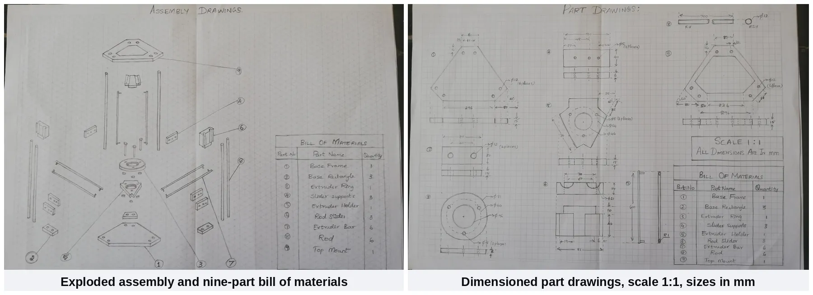
The full drawing set. On the left, the exploded assembly and its bill of materials: base frame, base rectangles, extruder ring, slider supports, extruder holder, rod sliders, extruder bars, rods and top mount. On the right, the same nine parts drawn and dimensioned at 1:1.
Result
The printer was finished, commissioned and printing. The photograph is a first layer of bagasse composite going down as a closed outline that holds its own shape. Twenty-five pieces built from nine drawn shapes, with the three-fold symmetry of the delta doing most of the work of holding the part count down.
Capabilities demonstrated
Machine design from first principles, delta kinematics, a complete dimensioned drawing set, design for repeated parts, mechanical assembly, and commissioning a process on a feedstock with no established parameters. The same order of problem returned five years later in FeSi6.5: in both cases the answer sat in the process window, not in the hardware.
Project 07
Utility Bicycle, Designed and Fabricated for SAEINDIA 2019
Design, analysis and fabrication · Jeppiaar Institute of Technology, Chennai · February to August 2019
A utility bicycle I took from a pencil layout through CAD and structural analysis to a welded frame, then entered and ridden at a national student competition. The rulebook set the brief, so the design was constrained from the first line drawn.
Scope: concept layout, frame design in CATIA V5, structural analysis, design revision on the analysis result Delivered: a frame design revised on its analysis result, and a fabricated bicycle that passed scrutineering and was ridden at the event Organiser: SAEINDIA Southern Section ·Event: 2 and 3 August 2019 Host: Department of Mechanical Engineering and Automobile Engineering, Kongu Engineering College, Perundurai, Erode
Situation
SAEINDIA Southern Section runs a bicycle design competition for engineering students. The brief is not open. The rulebook fixes the constraints, and an entry has to be designed on paper, modelled, fabricated, then brought to the event and put in front of judges who inspect it and ride it.
Task
Take a utility bicycle from a blank page to a machine that passes inspection and carries a rider, inside a fixed budget and the tooling available in the institute workshop. I owned the design side of it, from the first sketch to the frame that went to the welder.
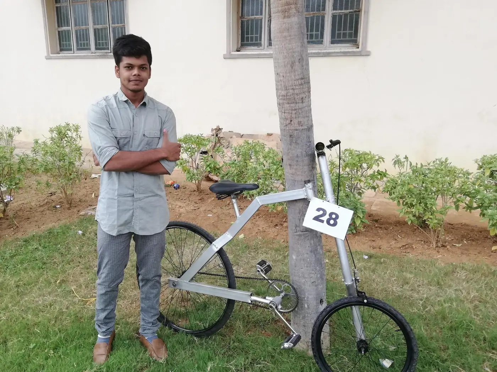
The finished bicycle at Kongu Engineering College in August 2019, carrying entry number 28.
Action
Layout in pencil first. I fixed the wheel positions, the main beam and the riding position by hand on 8 February, with the governing span marked at 46 cm. Changing geometry on paper costs a rubber. Changing it after the frame is welded costs a frame.
Frame modelled in CATIA V5. I built it as a sketch-driven solid rather than a dumb body, so that moving one dimension carries everything downstream of it instead of breaking the model.
Structural analysis, then redesign. I ran the analysis on the frame and reworked the design on what it returned rather than on what looked right. The second version is the one that matters; the first layout is an assumption until something tests it.
Fabrication and entry. Tube cut, fitted and welded, then wheels, drivetrain, brakes and controls fitted and set up, built as a team with the workshop in-charges. Taken to Kongu Engineering College on 2 August 2019 and run as entry number 28.
Six months in three frames: the pencil layout from February, the frame part way through modelling in CATIA V5 nine days later, and the welded frame at the event in August.
Result
The bicycle was finished, entered and ridden at the competition. It did not place. What it gave me was the whole loop in one piece of work: a line I drew in February had to survive my own analysis, then survive being welded, then survive a judge sitting on it in August.
Capabilities demonstrated
Concept layout, parametric solid modelling in CATIA V5, structural analysis, and a design revision driven by the analysis rather than filed alongside it. The frame that went to the welder was the second version, and it passed scrutineering first time.
Industry internship · ExpertsHub Industry Skill Development Centre, Bangalore
Exterior design · 15 to 22 January 2019 · J.S.S. Academy of Technical Education, Bangalore
Exterior design for a future mobility concept vehicle, produced during a 70-hour styling boot camp that closed with a design competition between the interns. The entry won it, and I was named best intern of the cohort.
70hours of studio work across eight days
2awards: competition winner and best intern
2019January, Bangalore
Scope: exterior design for a future mobility concept vehicle: sketching, rendering, digital sculpting, prototyping Delivered: a presented concept that took first place in the programme’s design competition Programme: Automotive Styling Boot Camp (ASBC), Winter 2018/19, 70 hours over eight days Run by: ExpertsHub Industry Skill Development Centre ·Held at: J.S.S. Academy of Technical Education, Bangalore
Situation
ExpertsHub ran an eight-day automotive styling boot camp at the J.S.S. Academy of Technical Education in Bangalore in January 2019. Seventy hours of sketching, rendering, digital sculpting and prototyping, closing with a design competition between the interns.
Task
Produce the exterior design for a future mobility concept vehicle, and learn the tools in the same week as being judged on them.
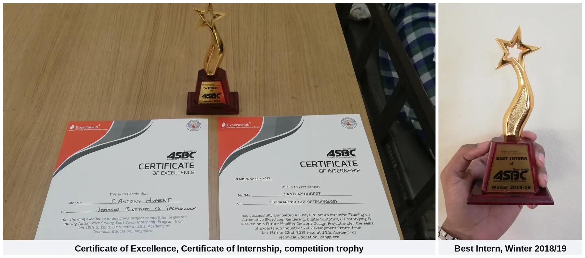
The Certificate of Excellence for the design project competition and the Certificate of Internship for the 70-hour programme, with both trophies. The signature block is cropped out of this photograph.
Action
I sketched first and sketched often, on paper with a marker and on the tablet in Procreate. Proportion and stance before any surface detail, then rendering, then the form into digital sculpting. Eight days is long enough to arrive at a concept and short enough that nothing can be laboured.
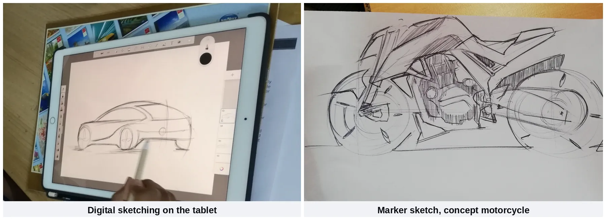
Day one and day two: the concept car taking shape on the tablet, and a marker sketch of a concept motorcycle from the same week.
Result
The entry won the project competition, and I was named best intern of the Winter 2018/19 cohort. ExpertsHub issued a Certificate of Excellence for the competition and a Certificate of Internship for the programme, both countersigned by the host institution.
Capabilities demonstrated
Automotive sketching and rendering, digital sculpting, surface development, and concept presentation to a deadline, judged against a cohort and placed first. The underlying discipline carries into engineering work: resolve the form on paper before committing it to CAD. The camera mount above began as a sketch, and so did the bicycle frame.
Further project work
Robotics and automation integration, 2018. Industry intern at iRobo Innovations, Chennai: end-to-end development and integration of automation systems for home and industrial products. Alongside it, an SAE workshop on reverse engineering, measuring physical parts and rebuilding them as parametric CAD models.
A bench test from that internship. A sensor module on the breadboard feeds an Arduino Uno, which drives the servo at the top of the frame. Triggering the sensor by hand steps the servo between positions, which is the whole control loop in miniature: read, decide, actuate.